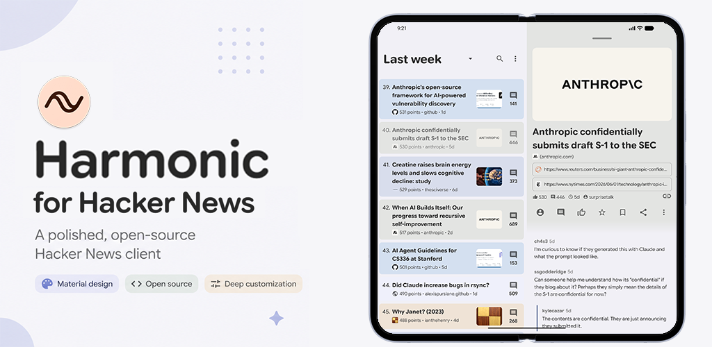

Harmonic for Hacker News is my open-source Hacker News client for Android which I've developed over six years. In that time, it's gone through a lot of changes and has to a large part defined and reflected my relation to and how I think about development. With the advent of Codex and related tools, this has shifted significantly over the last year, an experience I'm sure is not unique. In this post I want to chronicle parts of the development process of Harmonic and reflect on what how the experience developing it has evolved.

First, something about what Harmonic is. The Hacker News forum is run by the startup incubator Y Combinator and has been around for nearly 20 years. Its greatest strength is its users, which contribute some of the greatest semi-anonymous discourse you can find online. The moderators ruthlessly enforce the simple but fair rules and there is a strong culture which is holding up OK against the ever-growing pressure of Eternal September.
The dated spartan design of the homepage and the technical theme of the discussions do a fair enough job of scaring away the normies. At the same time, it does appear to scare away the designers as well which resulted in all the Android clients for HN sharing the level of polish of the web client (which, again, I am very glad looks the way it does). As an avid reader with a passion for product design, the prospect of making my own version and sparing myself from the existing clients was too alluring and during COVID I started work on version 1.0 of Harmonic.
I don't know how long it took to complete because it seems the entire app was built in a single commit but I can't imagine this was more than a couple weeks of work. The layout is far from unrecognizable and clearly had at least some love poured into it, not that I'm blind to the flaws, but I still find it aesthetically appealing. By 2020 I had already made more than 10 Android apps which had made a decent amount of money considering most of it came during high school, and I considered my Android career to be mostly behind me as I was doing my masters in mathematics. For this reason, I didn't want to invest in learning the new Android tools which had been made available during my hiatus but rather focused on pixel pushing and iterated to add the features and design tweaks I wanted at each step.
This process has essentially continued all the way to now, with pauses whenever I was excessively busy or interested in some other part of life, and periods of intense development when I fealt like it. Reading Hacker News almost daily makes sure I never forget about the app though, and can think deeply about design tweaks before it's time to implement them. When Harmonic was open sourced in 2023, it got a boost in downloads but overall the installs have been climbing fairly evenly over all these years which can be interpreted as the user appeal being roughly constant but I prefer to see it as staying on top of an increasingly competitive landscape, the truth is probably somewhere in between.
I do feel a little bad about playing a part in making Hacker News more accessible, but I do genuinely hope that having the app be a high-quality labor of love with no ads, tracking, or paid features can instill a sense of respect for the community in the users.
With the open sourcing of Harmonic, pull requests started to roll in. Most of them were good, but product-wise it was a challenge to start evaluating features which another human being had spent their own considerable time on. Luckily enough for me, most of the stuff that came in was good and issues were opened on GitHub for less mature feature requests. I think I learnt a lot about managing a product during those years as deciding what to focus on became considerably harder as the app was becoming more feature complete.
Over the years, the issue backlog for Harmonic grew as I didn't want to close good ideas but didn't necessarily have the time to implement them either. Coding with ChatGPT certainly helped but I was still deep in the code for all the features as the models weren't advanced enough for large codebases yet.
As I write this, I was looking up the first Codex PR to be merged into Harmonic and found out it was precisely a year ago, June 9th 2025. This o3 (?) based model was not particularly advanced either but the promise was clear. Over the year, I wrote less and less code myself by hand and in the month leading up to version 3.0 I burnt through 69 million tokens of GPT 5.5 at an API cost of around 1000 dollars. This was probably the most productive I've ever been in my life as I was participating in a loop of writing rough issues, formatting them into prompts, testing, and iterating for features at the same time. This issue backlog is essentially worked through completely and I am no longer limited by time but rather good design ideas.
I have used Codex extensively throughout the 5-series of GPT and have, as most probably, spent less and less time reading the output the more I learned through experience what it could and couldn't do. I still read some code, especially when it touches a part I know is especially finicky, but I pretty much never write code myself anymore. To be clear, I am incredibly proud of the polish of Harmonic 3.0 and think that from the user side it is as far away from a sloppily vibe coded app as you can come. I've spent so many hours on the smallest of details that I think we'll be rather deep into AGI if LLMs can ever reproduce something similar (which I do believe will happen).
At the same time, embracing the exponential and extreme productivity has forced me to grapple with the fact that it is not by being a better software engineer that Harmonic has been improved, it is by moving myself to something of a product manager role. Having migrated from a path towards being a software engineer to that of a mathematician and researcher in the last 5 years, I'm spared from having my professional self-image shattered to some degree (not that that path is safe necessarily) which perhaps should be of some comfort. I don't think I quite respected the old role of PMs (as someone from the outside) when I couldn't understand why leverage was so important in development. I've never been passionate about dependency injection or random programming patterns which aren't of much consequence to the user but have rather focused on getting the job done. This doesn't mean I don't understand why they're valuable, it's just that digging deep into them hasn't been particularly intellectually fulfilling.
Keeping improving Harmonic with a very different skillset is a bit scary but there's still a role to be played by taste, which I hope version 3.0 has benefited from. Thankfully, development is still fun to me and a nice way to express creativity and put something out into the world.
{kind=link}
{kind=link}
{kind=link}
{kind=link}